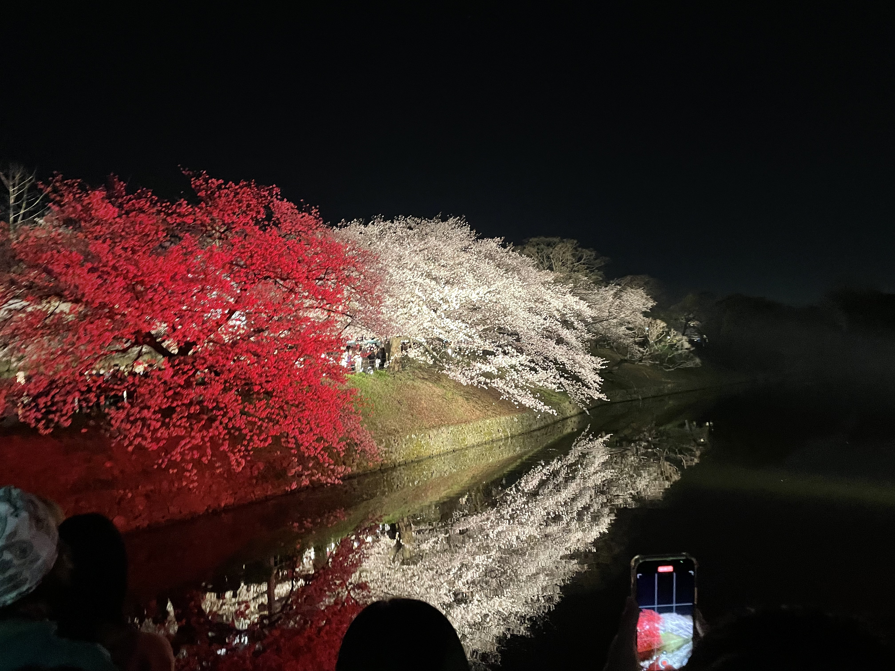

この写真は福岡の福岡城にある桜の写真です。また「福岡城さくらまつり 」といい
「福岡城さくらまつり 」は2023年3月24日（金曜日）～4月2日（日曜日）に開催されます。
19種、約1,000本もの桜が咲き誇り、福岡市内屈指の花見の名所として知られています。
夜間は、約500台の照明が園内の桜や史跡を照らし出し、昼とは一味違う景色が広がります。
ウスズミザクラやソメイヨシノがカラーライティング によって、さまざまな色に移り変わります。
一年に数日しか見れない光景なので福岡に来た際にはぜひ来てください！！